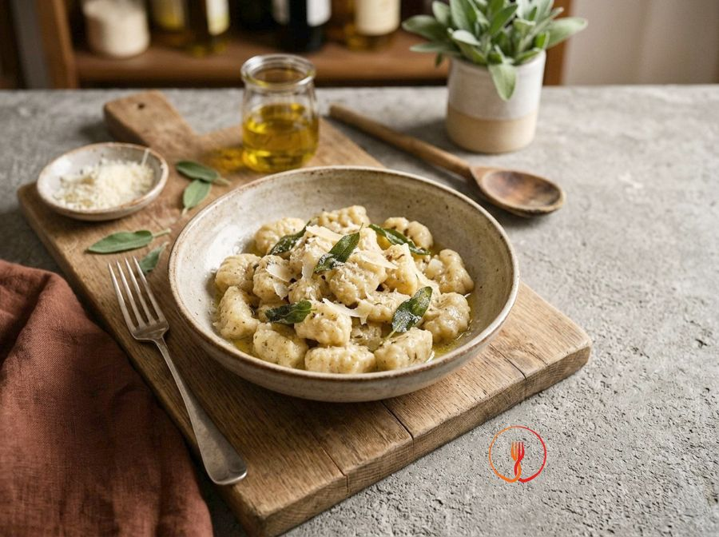

Gnocchi di patate
Ingredienti
- patate farinose1 kg
- farina 00 circa300 gr
- uovo medio (facoltativo)1 numero
- sale8 gr
- Farina per la lavorazioneq.b.
Allergeni
Glutine, Uova
Può contenere tracce di: Soia.
Procedimento
- Lava le patate e lessale con la buccia in acqua fredda salata per circa 30 minuti, verificando la cottura con una forchetta.
- Scolale, pelale ancora calde e schiacciale con uno schiacciapatate su una spianatoia
- Lascia intiepidire leggermente, quindi aggiungi il sale, l'uovo se previsto e circa 250 g di farina.
- Impasta rapidamente, incorporando altra farina solo se necessario, fino a ottenere una massa morbida che non si attacchi eccessivamente alle mani.
- Dividi l'impasto in porzioni e forma dei filoncini dello spessore di circa 2 cm.
- Taglia i filoncini in piccoli pezzi e passali delicatamente sui rebbi di una forchetta o sull'apposito rigagnocchi.
- Disponi gli gnocchi su un vassoio infarinato, senza sovrapporli.
- Cuoci in acqua bollente salata: scolali con una schiumarola quando vengono a galla e condiscili immediatamente.
Consigli dello chef
Consigli, errori e alternative:
- Preferisci patate farinose e non novelle.
- Non aggiungere troppa farina: gli gnocchi diventerebbero duri.
- Lavora l'impasto quando le patate sono ancora tiepide.
- Puoi preparare varianti con zucca, spinaci o barbabietola.
Valori nutrizionali (stima)
| Per porzione (348 g) | Per 100 g | |
|---|---|---|
| Energia | 2063 kJ / 493 kcal | 594 kJ / 142 kcal |
| Proteine | 15 g | 4.3 g |
| Carboidrati | 102 g | 29 g |
| di cui zuccheri | 3.1 g | 0.9 g |
| Grassi | 2.4 g | 0.7 g |
| di cui saturi | 0.5 g | 0.1 g |
| Fibre | 7.6 g | 2.2 g |
| Sale | 2.0 g | 0.6 g |
Valori stimati con l'AI su dati medi CREA / USDA: sono indicativi e non sostituiscono il parere di un medico o di un nutrizionista.
Apri la ricetta nell'app per la lista della spesa, le schede ingredienti e i negozi vicini.